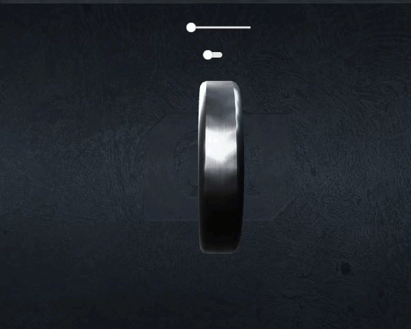
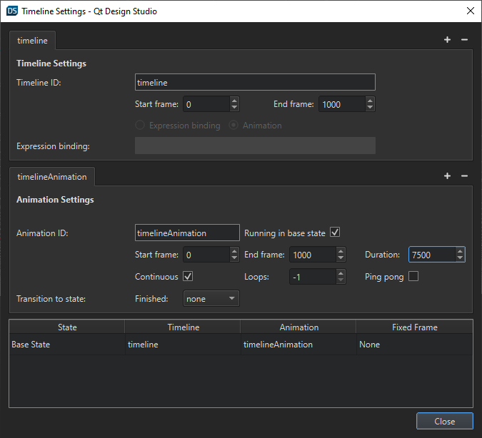
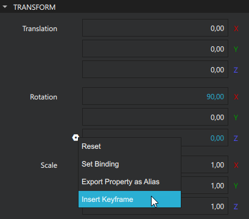
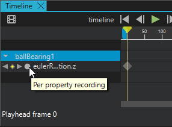
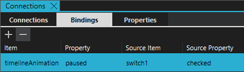
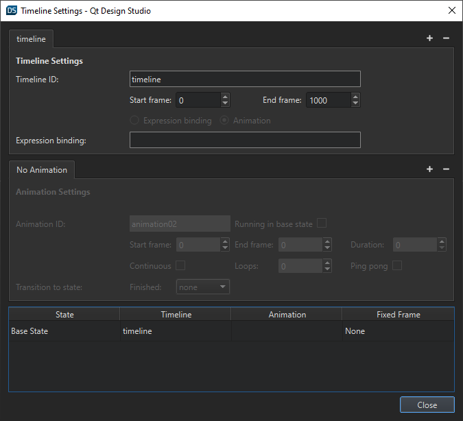
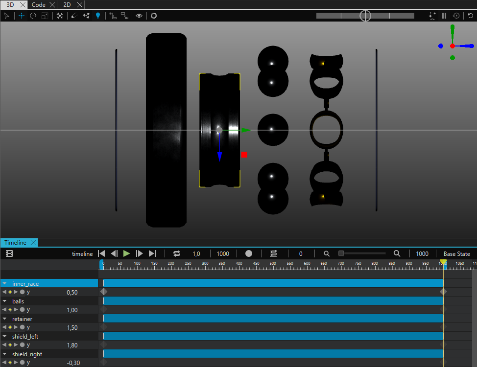
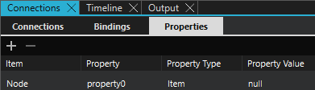
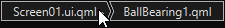
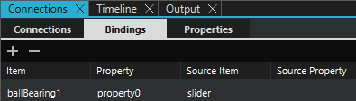

Timeline Animation Tutorial

The Timeline Animation tutorial illustrates how to create timeline animations and bind them to properties in Qt Design Studio. First you create a keyframe animation which you control the running state of with a switch in the UI. Next, you create another keyframe animation where you use a slider in the UI to control the position of the playhead.
The starting point of this tutorial is the Animation Tutorial project, you can download it from here.
You can download the completed project from here.
This tutorial requires that you know the basics of Qt Design Studio, see Getting Started.
Running the Tutorial Project
To open the tutorial project in Qt Design Studio, open the .qmlproject file located in the root folder of the downloaded project.
Creating a Timeline Animation
First, you create an animation where the ball bearing continuously rotates around its Y axis.
Adding a Timeline and an Animation
To add a timeline to your project:
- In the Timeline view, select
 . This creates a timeline and one animation.
. This creates a timeline and one animation. - On the Animation Settings tab in the Timeline Settings dialog:
- Set Duration to 7500. This sets the duration of the animation in milliseconds.
- Select Contiunous. This sets the animation to start over again when it reaches the end.

- Select Close.
You can see the timeline in the Timeline and Navigator views.
Adding Keyframes
Next, you add keyframes to animate the rotation of the ball bearing:
- In the Navigator view, select ballbearing1.
- In the Properties view, select
 (Actions) next to Rotation > Y.
(Actions) next to Rotation > Y. - Select Insert Keyframe.

- In the Timeline view, select the Per Property Recording button to start recording property changes.

- In the Timeline view, move the playhead to the end of the animation (frame 1000).
- In the Properties view, set Rotation > Z to 360. This creates a second keyframe.
- Select the Per Property Recording button to end the per property recording. To preview the animation, drag the playhead along the timeline.
Controlling the Running State of the Animation
There is a toggle switch in the UI of this project. To use this switch to control the running state of the animation:
- In the Navigator view, select timelineAnimation.
- In the Connections view, go to the Bindings tab.
- Select to create a binding.
- For the binding you created, set:
- Property to paused.
- Source Item to switch1.
- Source Property to checked.

You can preview the animation and try the toggle switch in the live preview. To run the live preview, select Alt + P.
Creating a Timeline and Binding it to a Property
Next, you create the exploded view animation of the ball bearing. You don't want this animation to run automatically but instead you want to control it with a slider in the UI.
Adding a Timeline Inside a Component
You create this animation inside the ball bearing component, to do this:
- In the Navigator view, select ballBearing1.
- Select F2 to go into the component.
- In the Timeline view, select to add a timeline and open the Timeline Settings dialog.
- Select
 next to the Animation Settings tab to remove the animation in this timeline. You do not need an animation when you bind the timeline to a property.
next to the Animation Settings tab to remove the animation in this timeline. You do not need an animation when you bind the timeline to a property. - Select Close.

Adding Keyframes
Now, you add keyframes for the different parts of the ball bearing:
- In the Navigator view, select inner_race.
- In the Properties view, select (Actions) next to Translation > Y.
- Select Insert Keyframe.
- In the Timeline view, select the Per Property Recording button to start recording property changes.
- In the Timeline view, move the playhead to the end of the animation (frame 1000).
- In the Properties view, set Translation > Y to 0,50.
- Select the Per Property Recording button to end the per property recording.
- Next, you set the keyframe values for the other parts of the ball bearing. For the following parts, set the Translation > Y value for frame 1000:
- balls to 1,00.
- retainer to 1,50.
- shield_left to 1,80.
- shield_right to -0,30.

You can preview the animation by dragging the playhead in the Timeline view.
Controlling the Animation with a Slider
Now, you use the slider on the main screen to control the exploded view animation that you created.
To do this, you first need to define a property for the slider:
- In the Navigator view, select Node.
- On the Properties tab in the Connections view, select .
- In the Property Type field, enter Item. This field is a drop-down list, but you can also type text.
- In the Property Value field, enter null.

Next, you set the property you just created to control the timeline animation:
- In the Timeline view, select
 .
. - In the Expression binding field, enter
property0.value. - Select Close.
Next, you go out from the component back to the main project and bind the property to the slider:
- In the toolbar, select the Screen01.ui.qml breadcrumb.

- In the Navigator view, select ballbearing1.
- In the Connections view, go to the Bindings tab.
- Select .
- For the binding you just created:
- Set Source Item to slider.
- Remove the value from Source Property.

Previewing
Now, the animations are done. To preview and test your application, select Alt + P.
See also Creating Timeline Animations.